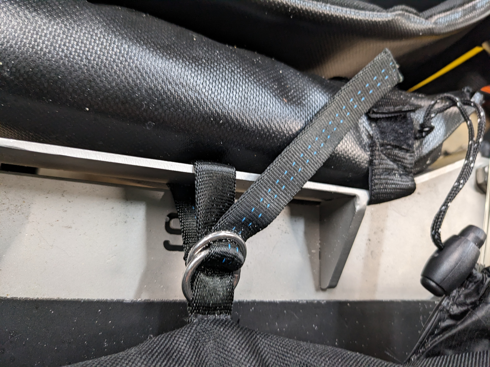
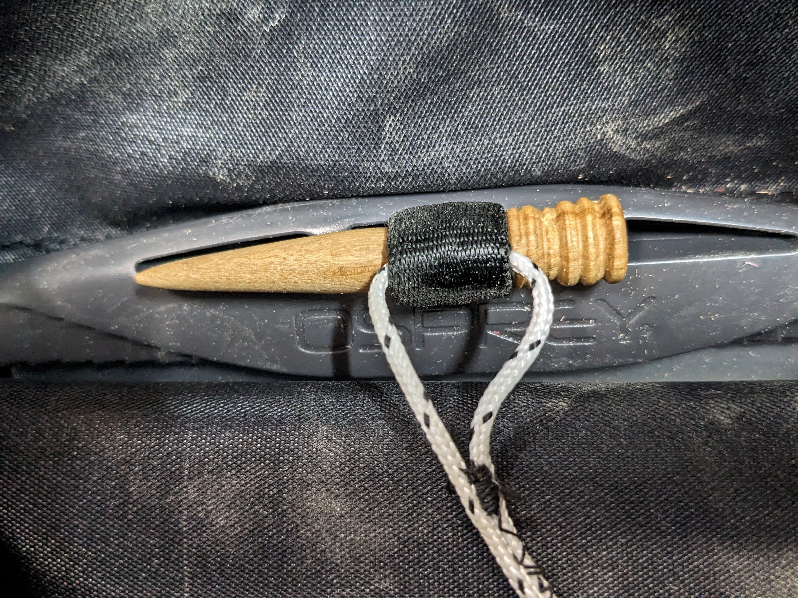
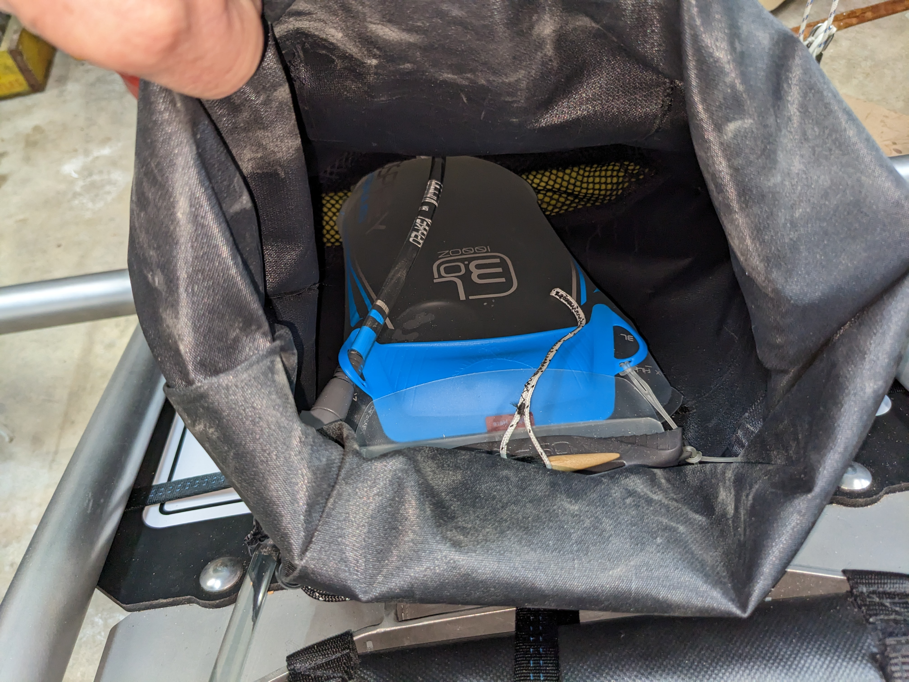

6 Installation and Maintenance
To install the backpack, the rear panel of the buggy’s “dressing” must already be installed. The panel supports the weight of the backback and its contents. The upper girth strap cinches to the panel.
Place the empty backpack on the rear panel. Route the free end of the center hanger down between the crack in the backplate and the flange just about backplate size indicator. Go below the flange, up between the flange and the pad and back to the double rings. Route the free end of the webbing through the rings and pull it tight while aligning the upper seam of the back pack with the upper edge of the rear panel. All of these details can be seen in Figure 6.1

Route each girth strap between the rear plate and the side tubes. Connect the free ends of each strap below the rear plate and cinch them tight.
6.1 Installing the bladder
Disconnect the hose from the bladder at the top of the bladder. Route into the hose exit on the side you prefer. Cinch the hose exit tight around the hose. Cinch the other hose exit to prevent intrusion of dirt or water. If needed, reconfigure the water bladder to match your preferred hose side.
Note: Fill the water bladder before installing it in the backpack.
Locate the dogbone, removing it from the webbing loop if needed. Lower the water bladder into the backpack. Thread the threading loop through the top center of the slide opening of the bladder. Pull the webbing loop through the center of the slide opening. Push the dogbone into the webbing loop to secure the bladder.
Locate the end of the hose inside the backpack. Insert it into the connector on the bladder.
The finished product looks like Figure 6.2 and Figure 6.1


6.2 Removing the bladder
To remove the bladder, disconnect the hose at the top of the bladder. Pull the dogbone out of the loop and lift the bladder out. Don’t lose the dogbone!
6.3 Cleaning the backpack
To remove dirt from the backpack or the phone pouch, open the dirt-out at the bottom. Most of the sand should fall out freely. If it doesn’t, compressed air or a leaf blower applied at the upper end should clear the remaining sand.
If sea water intruded into the backpack, it should be rinsed with a fresh water. Leave the backpack empty and open to dry if it is wet. It is made of waterproof fabric and will not dry if it is not left open and well-ventilated for several hours.